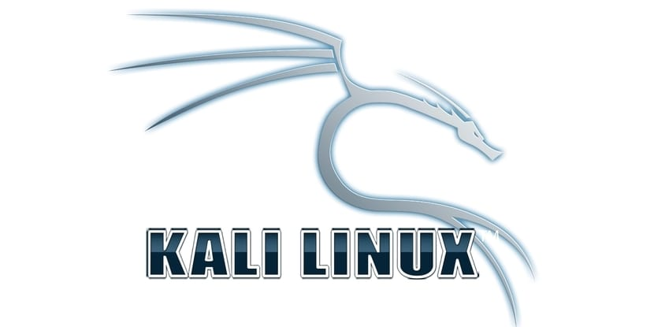
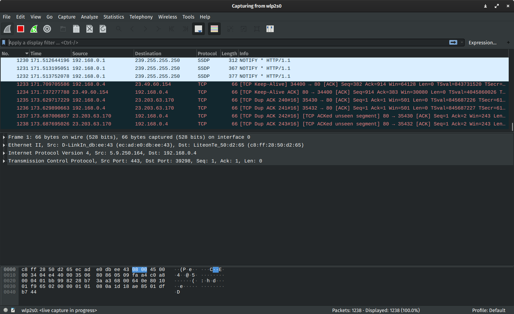

| # | Herramienta | Interfaz | Descripción | Ventajas |
|---|---|---|---|---|
| 1 |

Kali Linux |
Kali Linux es una distribución de Linux de código abierto basada en Debian que ofrece una variedad de software gratuito, utilidades de seguridad cibernética y herramientas de prueba de penetración |
|
|
| 2 |
KeePass |
Kali Linux es una distribución de Linux de código abierto basada en Debian que ofrece una variedad de software gratuito, utilidades de seguridad cibernética y herramientas de prueba de penetración |
|
|
| 3 |
Marco de Metasploit |
Metasploit Framework es una herramienta de validación de vulnerabilidades y explotación que puede utilizar de forma ofensiva para probar sus sistemas en busca de vulnerabilidades conocidas y abiertas |
|
|
| 4 |
Nikto |
Nikto es un escáner de servidor web gratuito y de código abierto, que escanea los servidores web en busca de múltiples vulnerabilidades. |
|
|
| 5 |
OpenVAS |
OpenVAS es un escáner de vulnerabilidades de código abierto y completo, de uso gratuito. Los usuarios pueden realizar pruebas no autenticadas y autenticadas para varios protocolos industriales y de Internet de alto y bajo nivel |
|
|
| 6 | OSSEC es un sistema de detección de intrusiones (HIDS) de código abierto, escalable y multiplataforma, cuyos creadores quieren mantenerse libres en el futuro previsible |
|
||
| 7 |
VeraCrypt |
VeraCrypt es una herramienta de seguridad para el cifrado de discos. Se ejecuta en Windows, Mac OSX y Linux y crea un disco virtual encriptado dentro de un archivo antes de montarlo como un disco real |
|
|
| 8 |  | Wireshark es una herramienta gratuita y de código abierto para el análisis de protocolos de red. Esta herramienta de ciberseguridad permite a los profesionales de seguridad observar la red a un nivel microscópico al ver el tráfico, descargar paquetes específicos, verificar el formato del paquete y encontrar problemas de red de esta manera. |
|